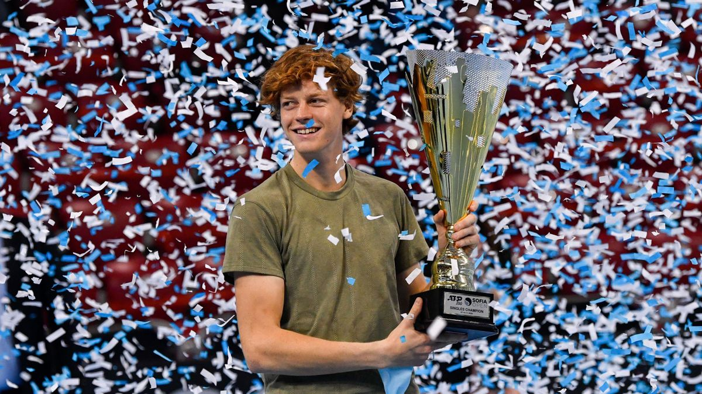

Carriera
Juniores:
A livello juniores vince il Grade 4 sul cemento al 2nd Qatar ITF Open 2017, partendo dalle qualificazioni, e il Grade 4 sulla terra rossa della Sanchez-Casal Junior Cup 2017, disputata a El Prat. Nel 2018 raggiunge i quarti di finale del Trofeo Bonfiglio e viene sconfitto dal giapponese Naoki Tajima dopo aver mancato un match-point. Il suo migliore ranking è stato il nº 133, raggiunto il 1º gennaio 2018.
2015-2018: inizi da professionista:
Fa il suo debutto nel circuito professionistico il 12 settembre del 2015, all'età di 14 anni, disputando senza successo le qualificazioni del Futures Croatia F16. Il 19 marzo 2016, nel primo turno delle qualificazioni del Futures Croatia F4, vince il suo primo incontro da professionista, sconfiggendo in due set il croato Leo Kovačić, per poi essere eliminato al turno successivo.
Il 31 gennaio 2018, a 16 anni e 5 mesi, vince il suo primo incontro nel tabellone principale di un torneo professionistico, nel Futures Egypt F3 disputato a Sharm el-Sheikh, sconfiggendo l'indiano Aryan Goveas, e il 12 febbraio 2018 entra per la prima volta nella classifica mondiale, alla posizione nº 1592. Il 18 agosto dello stesso anno giunge per la prima volta in finale a livello Futures sulla terra rossa del torneo Italy F23 di Santa Cristina Valgardena e viene sconfitto in due set dal tedesco Peter Heller. Il giorno precedente, in coppia con Giacomo Dambrosi si era aggiudicato il suo primo torneo ITF in doppio, sconfiggendo in due partite l'italiano Nicolò Turchetti e il francese Maxime Mora.
Grazie a una wild card, esordisce nel circuito Challenger al torneo di Como, dove viene sconfitto al primo turno da Andrej Martin in due set. Al torneo di Ortisei, alla sua seconda presenza nel main draw di un Challenger, vince il suo primo incontro di categoria il 9 ottobre 2018, sconfiggendo al primo turno in due set il connazionale Luca Giacomini. Negli ottavi di finale viene sconfitto in tre partite dal francese Constant Lestienne. Chiude la stagione 2018 alla posizione nº 551 della classifica mondiale.
2019: vittoria alle Next Gen ATP Finals e top 80:
Nella penultima settimana di febbraio partecipa al Challenger 80 di Bergamo, che si aggiudica il 24 febbraio, battendo in finale Roberto Marcora col punteggio di 6-3, 6-1. Conquista così il suo primo titolo di categoria, diventando il 21º più giovane tennista della storia ad aggiudicarsi un titolo del circuito Challenger. Si aggiudica quindi il Futures M25 Ata Battisti di Trento, superando in finale il tedesco Jeremy Jahn col punteggio di 6-3, 6-4. Sulla terra rossa del Futures M25 di Santa Margherita di Pula colleziona la sedicesima vittoria di fila e vince il terzo titolo consecutivo, sconfiggendo in finale Andrea Pellegrino per 6-1, 6-1. La serie di incontri vinti in successione si arresta il 2 aprile al primo turno del Challenger di Villena, dove viene sconfitto in tre set dal quindicenne Carlos Alcaraz, sceso in campo grazie a una wild card.
Il 20 aprile, nel 250 di Budapest, Sinner supera per la prima volta un turno nel tabellone di qualificazioni di un torneo ATP grazie al ritiro di Lukáš Rosol nel corso del secondo set. Nel turno decisivo viene sconfitto in due set da Yannick Maden ma, ripescato come lucky loser, fa il suo esordio assoluto nel tabellone principale di un torneo ATP. Il 24 aprile vince il suo primo incontro nel circuito maggiore sconfiggendo per 6-2, 0-6, 6-4 la wild card ungherese Máté Valkusz. Al Challenger Prosperita Open di Ostrava raggiunge la sua seconda finale di categoria, dove viene sconfitto da Kamil Majchrzak per 6-1, 6-0.
Ottiene una wild card per il tabellone principale degli Internazionali d'Italia e, a 17 anni e 8 mesi, disputa e vince il suo primo incontro in un torneo Masters 1000, contro Steve Johnson, col punteggio di 1-6, 6-1, 7-5, dopo aver salvato un match-point. Nel turno successivo viene eliminato in due set da Stefanos Tsitsipas, nº 7 del ranking mondiale.
A s-Hertogenbosch disputa per la prima volta le qualificazioni di un torneo ATP per diritto di classifica. Nel primo incontro della sua carriera su erba, dove non aveva mai giocato nemmeno a livello juniores, elimina in tre set lo specialista Lukáš Lacko. All'esordio nel tabellone principale esce di scena per mano di Nicolás Jarry in due set. A Wimbledon, nella sua prima presenza nel tabellone di qualificazioni di un torneo del Grande Slam, viene sconfitto al primo turno da Alex Bolt in tre set, 6-2, 5-7, 10-12.
Dopo essere uscito al secondo turno a Binghamton, al Challenger di Lexington conquista il secondo titolo di categoria superando in finale Alex Bolt con il punteggio di 6-4, 3-6, 6-4. Nel successivo torneo di Aptos supera al primo turno il lucky loser olandese Sem Verbeek, per poi arrendersi a Bjorn Fratangelo in due set. Al termine del torneo sale alla posizione nº 130 della classifica ATP, in cui figura come miglior under 18 al mondo.
A Flushing Meadows entra per la prima volta nel tabellone principale di un torneo del Grande Slam, grazie ai successi nelle qualificazioni su Matteo Viola, Viktor Galović (al quale annulla due match-point) e Mario Vilella Martínez. Al suo debutto si arrende a Stan Wawrinka con il punteggio di 3-6, 6-7, 6-4, 3-6.
Grazie a una wild card prende parte all'ATP 250 di Anversa e raggiunge per la prima volta una semifinale nel circuito maggiore, più giovane italiano di sempre a spingersi così avanti in un torneo ATP, eliminando al primo turno in due set Kamil Majchrzak (6-4, 6-2). Negli ottavi concede solo cinque giochi alla testa di serie nº 1 Gaël Monfils (nº 13 del mondo) e nei quarti piega Frances Tiafoe in tre set. In semifinale si arrende in due set a Stan Wawrinka. Il 21 ottobre si attesta alla posizione nº 101 del ranking ATP.
Il 28 ottobre sale alla 93ª posizione della classifica mondiale, diventando il più giovane tennista italiano di sempre a entrare nella top 100.
 Nel suo primo incontro di Round-robin delle Next Generation ATP Finals supera in quattro set Frances Tiafoe, diventando il primo tennista italiano a vincere un incontro di questa manifestazione. Nel match successivo si impone in tre set su Mikael Ymer e si qualifica per le semifinali, nonostante la sconfitta subita in quattro set da Ugo Humbert nell'ultimo incontro del girone. Superando in quattro set Miomir Kecmanović giunge in finale, dove batte in tre set Alex De Minaur.
Nel suo primo incontro di Round-robin delle Next Generation ATP Finals supera in quattro set Frances Tiafoe, diventando il primo tennista italiano a vincere un incontro di questa manifestazione. Nel match successivo si impone in tre set su Mikael Ymer e si qualifica per le semifinali, nonostante la sconfitta subita in quattro set da Ugo Humbert nell'ultimo incontro del girone. Superando in quattro set Miomir Kecmanović giunge in finale, dove batte in tre set Alex De Minaur.
Disputa il suo ultimo torneo stagionale al Challenger di Ortisei, battendo in finale Sebastian Ofner.
Grazie agli 80 punti conquistati, scala 473 posizioni rispetto alla conclusione della stagione precedente e chiude l'annata al 78º posto del ranking ATP, diventando il più giovane tennista a entrare nella top 80 dal 2003. Il 19 dicembre viene scelto per il premio di "Newcomer of the Year", tennista rivelazione dell'anno.
2020: quarti a Parigi, primo titolo ATP, top 40:
Dopo due sconfitte al primo turno nel Bendigo Challenger e nell'ATP 250 di Auckland, entra per la prima volta per diritto di classifica nel tabellone principale degli Australian Open. Sconfiggendo al primo turno il qualificato Max Purcell, in tre set, diventa il più giovane tennista italiano della storia ad aver vinto un incontro nel Major australiano e, dopo Diego Nargiso, il secondo ad aver superato un turno in una prova del Grande Slam. Nel secondo turno si arrende in tre set a Márton Fucsovics.
A Montpellier entra per la prima volta nel tabellone principale di un torneo di categoria ATP 250 grazie alla posizione in classifica e viene sconfitto al primo turno da Mikael Ymer in due set. A Rotterdam, dove beneficia di un invito da parte degli organizzatori, giunge per la prima volta ai quarti di finale di un torneo di categoria ATP 500, più giovane italiano della storia a realizzare l'impresa, grazie al forfait di Radu Albot e al successo in due set su David Goffin, nº 10 del mondo e primo top 10 da lui sconfitto in carriera. Il suo cammino si ferma per opera di Pablo Carreño Busta che si impone al tie-break del terzo set dopo aver salvato due match-point. Il 17 febbraio sale alla posizione numero 68 della classifica mondiale.
Al 250 di Marsiglia giunge agli ottavi di finale, sconfiggendo al primo turno il qualificato Norbert Gombos in due set., per poi cedere in tre set alla testa di serie nº 1 e 5º giocatore del mondo Daniil Medvedev.
Alla ripresa della stagione dopo la sospensione causata dalla pandemia di COVID-19, partecipa ad agosto al torneo di qualificazioni del Western&Southern Open, eccezionalmente spostato da Cincinnati a New York, e viene eliminato al primo turno da Salvatore Caruso in tre set. La sua seconda esperienza agli US Open lo vede uscire al primo turno contro Karen Khachanov con il punteggio di 6-3, 7-6, 2-6, 0-6, 6-7.
La settimana successiva disputa l'ATP 250 di Kitzbühel, superando al primo turno Philipp Kohlschreiber in due frazioni. Viene poi eliminato nel turno successivo da Laslo Đere in due set. Agli Internazionali d'Italia, cui partecipa grazie a una wild card, diventa il primo giocatore nato nel 2001 a qualificarsi per gli ottavi di finale di un torneo di categoria Masters 1000, sconfiggendo all'esordio Benoît Paire e vendicando al secondo turno la sconfitta subita nell'edizione precedente da Tsitsipas, testa di serie numero 3 del torneo e numero 6 del mondo, il giocatore con la migliore classifica da lui battuto in carriera. Al 3º turno viene sconfitto da Grigor Dimitrov in tre set.
Il 27 settembre partecipa per la prima volta al Roland Garros, accedendo direttamente al tabellone principale. Supera senza perdere un set David Goffin, testa di serie numero 11, Benjamin Bonzi e Federico Coria, diventando il primo giocatore del 2001 a raggiungere gli ottavi di finale di una prova del Grande Slam, nonché il sesto più giovane al mondo e primo tra gli italiani a spingersi così avanti agli Internazionali di Francia. Negli ottavi di finale supera in quattro set Alexander Zverev, numero 6 del torneo e numero 7 del mondo, diventando il più giovane italiano di sempre a raggiungere i quarti di finale in una prova del Grande Slam. A eliminarlo è Rafael Nadal, futuro vincitore del torneo, che lo supera in tre set (7-6, 6-4, 6-1). A fine torneo Sinner raggiunge la posizione numero 46 della graduatoria ATP.
Il 23 ottobre raggiunge la semifinale del torneo ATP 250 di Colonia, battendo in due set Pierre-Hugues Herbert e James Duckworth e, nei quarti di finale, Gilles Simon in tre partite. A impedirgli l'accesso in finale è Alexander Zverev, futuro vincitore del torneo, che, in due set, vendica la sconfitta subita negli ottavi del Roland Garros.
Il 26 ottobre Sinner raggiunge la posizione numero 43 del ranking ATP.
Al torneo ATP 500 di Vienna, cui partecipa grazie a una wild card, supera al primo turno Casper Ruud in due set. Durante il primo set del turno successivo contro Andrey Rublev è costretto al ritiro per un problema al piede.

Nel 250 di Sofia diventa il più giovane (19 anni, due mesi e 29 giorni) dei 26 tennisti italiani ad aver conquistato un titolo ATP nell'era Open. Al primo turno elimina Márton Fucsovics col punteggio di 6-2, 6-4. Negli ottavi di finale supera il lucky loser Marc-Andrea Hüsler per 6-3, 6-4. Nei quarti la spunta in rimonta su Alex De Minaur con lo score di 6-7, 6-4, 6-1. Nella sua terza semifinale in carriera (la seconda in stagione), elimina in due set Adrian Mannarino per 6-3, 7-5. Nell'atto conclusivo, il 14 novembre, trionfa al tie-break del terzo set su Vasek Pospisil, sollevando il suo primo trofeo nel circuito maggiore. Il 16 novembre fa il suo ingresso nella top 40 della classifica mondiale, attestandosi alla 37ª posizione, la stessa con cui chiude la stagione.
2021: 4 titoli ATP, finale a Miami, top 10:
Inizia la stagione conquistando il secondo titolo consecutivo in carriera al 250 di Melbourne, sconfiggendo in finale Stefano Travaglia.
Alla sua seconda presenza agli Australian Open, il sorteggio del primo turno lo mette di fronte a Denis Shapovalov, nº 12 del mondo e testa di serie nº 11, che si impone per 3 a 1 dopo quattro ore di gioco.
Al Masters 1000 di Miami, accreditato della ventunesima testa di serie, Sinner si spinge in finale dopo aver sconfitto Hugo Gaston, Karen Khachanov, Emil Ruusuvuori, Alexander Bublik e Roberto Bautista-Agut, cedendo soltanto due set in questi incontri. Viene sconfitto in finale dal polacco Hubert Hurkacz con il punteggio di 7-6 6-4.
Nel suo debutto assoluto al Masters 1000 di Monte Carlo elimina in due set Albert Ramos Viñolas, prima di arrendersi al secondo turno al numero 1 del mondo Novak Đoković, che si impone per 6-4, 6-2.
Al Roland Garros, accreditato della testa di serie nº 18, raggiunge gli ottavi di finale per il secondo anno consecutivo. All'esordio vince il suo primo incontro in carriera in cinque set, contro Pierre-Hugues Herbert, salvando un match point. Al secondo turno prevale su Gianluca Mager in quattro partite, mentre nei sedicesimi di finale elimina Mikael Ymer in tre set. Come nell'edizione precedente, deve cedere il passo al campione uscente, numero 3 del mondo, Rafael Nadal, che lo supera in tre partite. A Wimbledon, invece, viene eliminato in quattro set da Márton Fucsovics.
Il 3 luglio annuncia la propria assenza dalle imminenti Olimpiadi di Tokyo, motivando la scelta con l'esigenza di doversi concentrare sulla crescita e sul miglioramento del gioco, una decisione che lo rende oggetto di varie critiche.
Prende quindi parte allo swing americano estivo sul cemento, cominciando dal 250 di Atlanta, dove, accreditato della testa di serie nº 2, perde all'esordio contro Christopher O'Connell. Nello stesso torneo, in coppia con Reilly Opelka, conquista il suo primo titolo in doppio nel circuito maggiore.
Nell'ATP 500 di Washington è testa di serie nº 5 e supera all'esordio Emil Ruusuvuori in due set, tornando al successo in singolare dopo quattro sconfitte consecutive. Negli ottavi di finale la spunta in due tie-break su Sebastian Korda, suo compagno nel torneo di doppio, dove i due giocatori raggiungono la semifinale. Sconfigge Steve Johnson ai quarti e batte Jenson Brooksby in semifinale, approdando alla sua quarta finale ATP in carriera. Nell'atto conclusivo batte Mackenzie McDonald col punteggio di 7-5, 4-6, 7-5, primo italiano ad aver conquistato il torneo di Washington.
Alla sua terza partecipazione agli US Open è testa di serie nº 13 e al primo turno elimina in quattro set Max Purcell. Nel turno successivo supera Zachary Svajda in quattro partite, mentre nei sedicesimi la spunta in cinque set su Gaël Monfils e diventa il più giovane tennista italiano della storia ad aver raggiunto gli ottavi di finale agli Open degli Stati Uniti. Negli ottavi perde in tre set contro Alexander Zverev.
A Sofia, dove è campione in carica e, per la prima volta in carriera, testa di serie numero 1 in un torneo del circuito maggiore, si conferma campione grazie ai successi, ottenuti senza perdere un set, contro Egor Gerasimov, James Duckworth, Filip Krajinovic e Gaël Monfils.
Nel 250 di Anversa, dove è testa di serie numero 1, esordisce direttamente negli ottavi di finale, dove sconfigge in due set Lorenzo Musetti. Nei quarti elimina Arthur Rinderknech, mentre in semifinale prevale su Lloyd Harris e raggiunge la sua quinta finale in stagione, più giovane tennista italiano della storia ad aver compiuto l'impresa. Nell'atto conclusivo sconfigge Diego Schwartzman e conquista il suo quinto titolo ATP, il quarto nella stessa stagione, record per il tennis italiano. Diventa così il sesto e più giovane tennista italiano, nonché il più giovane in assoluto dai tempi di Novak Djokovic, a essersi aggiudicato almeno cinque tornei ATP in carriera.
Il 25 ottobre viene convocato per la prima volta in nazionale dal capitano Filippo Volandri in vista della fase finale di Coppa Davis. Il 1º novembre si issa alla posizione nº 9 del ranking ATP, la terza, a pari merito con Fabio Fognini, mai raggiunta da un tennista italiano, dopo la 4ª di Adriano Panatta, la 6ª di Matteo Berrettini e la 7ª di Corrado Barazzutti.
Nella sua prima esperienza al Masters 1000 di Parigi è testa di serie numero 8 ed esce al turno d'esordio contro Carlos Alcaraz, in due set, mentre nell'ATP 250 di Stoccolma, dove è testa di serie numero 1, viene subito eliminato da Andy Murray, sempre in due partite.
Le due sconfitte gli precludono la partecipazione diretta alle ATP Finals, dove, come prima riserva, subentra a Matteo Berrettini, infortunatosi nel primo match contro Alexander Zverev nel girone rosso, composto anche da Hubert Hurkacz e Danill Medvedev. Al suo debutto supera Hurkacz, numero 9 del mondo, con un doppio 6-2 e diventa il più giovane tennista italiano ad aver vinto un incontro alle ATP Finals, il primo ad averlo fatto senza essere stato già eliminato dal proprio girone. Nel suo secondo e ultimo incontro, disputato quando la sua eliminazione era già stata decretata, Sinner viene sconfitto da Medvedev al tie-break del terzo set dopo aver avuto due match point.
Il 26 novembre debutta in Coppa Davis, infliggendo a John Isner la più pesante sconfitta in carriera (6-2, 6-0), nella sfida vinta dall'Italia sugli Stati Uniti nel girone E. Grazie al successo ottenuto in due set contro Daniel Elahi Galán, contribuisce alla qualificazione dell'Italia ai quarti di finale dove, superando in rimonta Marin Čilić, porta il proprio team a disputare contro la Croazia la gara di doppio decisiva per l'accesso in semifinale. Insieme a Fabio Fognini, viene sconfitto in due set dalla coppia numero 1 del mondo Nikola Mektić / Mate Pavić.
Chiude l'annata alla posizione nº 10 della classifica, quarto tennista italiano di sempre a concludere la stagione da top 10.
2022: quarti agli Australian Open, Wimbledon e US Open, n° 1 d'Italia:
Il 2 gennaio debutta in ATP Cup, sconfiggendo in due set Max Purcell, nella sfida del Girone B poi perduta dall'Italia contro l'Australia, mentre due giorni dopo supera, sempre in due set, Arthur Rinderknech, contribuendo al successo della sua squadra sulla Francia, grazie anche alla vittoria in doppio insieme a Matteo Berrettini. Il 6 gennaio nonostante il suo successo contro Roman Safiullin in due set, la nazionale italiana perde contro la Russia nel doppio decisivo, dove Sinner gioca ancora con Berrettini, e viene eliminata dal girone.
Agli Australian Open Sinner batte in sequenza João Sousa, Steve Johnson, Tarō Daniel e Alex De Minaur, qualificandosi per la prima volta ai quarti di finale del Major australiano, dove viene sconfitto da Stefanos Tsitsipas in tre set.
A febbraio, dopo quasi otto anni di collaborazione, annuncia l'interruzione dei rapporti con il suo allenatore Riccardo Piatti, sostituito da Simone Vagnozzi che da giugno sarà affiancato da Darren Cahill.
Nel 500 di Dubai viene eliminato ai quarti di finale da Hubert Hurkacz dopo aver annullato tre match point nel turno d'esordio ad Alejandro Davidovich Fokina. A Indian Wells esce negli ottavi di finale, che non disputa a causa di un'influenza, mentre a Miami si ferma nei quarti contro Francisco Cerúndolo per un problema di vesciche al piede, dopo aver annullato match point sia a Emil Ruusuvuori (3) nel primo turno, sia a Pablo Carreno Busta (5) nel secondo.
Nel Masters 1000 di Monte Carlo raggiunge per la prima volta i quarti di finale grazie ai successi contro Borna Ćorić, il qualificato Emil Ruusuvuori e il numero 8 del ranking ATP e testa di serie numero 5, Andrey Rublëv. Si arrende poi al tie-break del set decisivo contro il numero 3 del mondo Alexander Zverev. Nel Masters 1000 di Madrid, raggiunge gli ottavi di finale superando Tommy Paul, al quale annulla tre match-point, e Alex De Minaur, contro cui vince il suo centesimo incontro ATP. Esce di scena contro Félix Auger-Aliassime, che gli concede appena tre giochi. Grazie ai successi su Fabio Fognini e Filip Krajinovic, raggiunge per la prima volta in carriera i quarti di finale agli Internazionali d'Italia, dove viene sconfitto da Stefanos Tsitsipas, testa di serie numero 4 e numero 5 del ranking ATP.
Al Roland Garros si spinge fino agli ottavi di finale per il terzo anno consecutivo, eliminando il qualificato Bjorn Fratangelo, Roberto Carballés Baena e Mackenzie McDonald. Un infortunio al ginocchio gli preclude l'accesso ai quarti di finale, costringendolo al ritiro nel corso del terzo set contro Andrey Rublëv e a rinunciare al successivo ATP 500 di Halle. Scende così alla posizione n° 13 del ranking ATP.
A partire da giugno, entra a far parte dello staff di Sinner il coach Darren Cahill affiancando Simone Vagnozzi nella gestione tecnica del giocatore.
Tornato in gara nel 250 di Eastbourne, all'esordio contro Tommy Paul colleziona la quarta sconfitta in altrettanti incontri da lui disputati su erba a livello ATP.
A Wimbledon, dove è testa di serie nº 10, vince il suo primo incontro in un tabellone principale su erba, contro Stan Wawrinka in quattro set. Nei due turni successivi elimina Mikael Ymer in quattro set e John Isner in tre. Negli ottavi di finale supera in quattro partite il numero 7 del mondo e testa di serie n° 5 Carlos Alcaraz, diventando il più giovane dei sei tennisti italiani mai qualificatisi per i quarti di finale dei Championships. L'accesso in semifinale gli viene impedito dal tre volte campione uscente, n° 3 del mondo, testa di serie n° 1 e futuro vincitore del torneo, Novak Djokovic, che lo supera in cinque partite rimontando uno svantaggio di due set.
L'11 luglio, risale al decimo posto e conquista per la prima volta la leadership nazionale nel ranking ATP, scavalcando Matteo Berrettini, in seguito alla decisione dell'ATP di non assegnare punti nell'edizione appena conclusa del torneo di Wimbledon in risposta all'esclusione dal torneo dei giocatori russi e bielorussi.
Nel 250 di Umago è la testa di serie n° 2 e raggiunge, senza perdere un set, la sua prima finale in stagione, la prima in carriera sulla terra rossa, superando negli ottavi di finale Jaume Munar, nei quarti Roberto Carballés Baena e in semifinale Franco Agamenone, al quale concede quattro giochi. Nell'ultimo atto trionfa in rimonta sul numero 5 del mondo e testa di serie n° 1 Carlos Alcaraz conquistando il suo sesto titolo ATP, il primo sulla terra rossa, e diventa il sesto e il più giovane tennista italiano ad aver vinto un torneo sconfiggendo in finale un avversario classificato tra i primi cinque del mondo.
Decide di non difendere il titolo conquistato l'anno precedente a Washington e l'8 agosto scende alla posizione nº 12 del ranking.
Inizia il suo swing sul cemento nordamericano dal Masters 1000 di Montréal, dove partecipa per la seconda volta ed è testa di serie nº 7. All'esordio supera in rimonta Adrian Mannarino ottenendo la sua prima vittoria in carriera nel torneo, mentre negli ottavi di finale si arrende in due set a Pablo Carreño Busta, futuro vincitore del titolo. Raggiunge per la prima volta gli ottavi di finale a Cincinnati, dove è testa di serie n° 10, eliminando il qualificato Thanasi Kokkinakis, al tie-break del set decisivo, e Miomir Kecmanović, ritiratosi nel secondo set dopo aver perso il primo. Al terzo turno viene eliminato in rimonta dal nº 9 del mondo Félix Auger-Aliassime, dopo aver avuto a disposizione due match-point nel secondo set.
Al primo turno degli US Open, dove è testa di serie nº 11, deve ricorrere al quinto set per avere la meglio su Daniel Altmaier, mentre al secondo si impone in tre partite sul qualificato Christopher Eubanks e nei sedicesimi di finale supera in rimonta, in quattro set, Brandon Nakashima. Nel quarto turno batte in cinque set Il'ja Ivaška diventando il più giovane dei tre tennisti italiani ad aver raggiunto i quarti di finale agli Open degli Stati Uniti e l'unico, insieme a Matteo Berrettini, ad aver disputato i quarti in tutte le prove del Grande Slam. A impedirgli l'accesso alla sua prima semifinale Slam è la testa di serie numero 3, futuro vincitore del torneo e imminente numero 1 al mondo, Carlos Alcaraz, che lo supera in cinque set dopo oltre cinque ore di gioco, annullando un match-point nella quarta partita.
Torna in campo in Coppa Davis, dove vince il singolare contro Francisco Cerúndolo e perde quello contro Mikael Ymer nella fase a gironi di Coppa Davis in cui l'Italia si qualifica per i quarti di finale.
Nel 250 di Sofia, dove era campione in carica e imbattuto, si ferma in semifinale contro Holger Rune, a causa di un infortunio alla caviglia destra, e vede interrompersi una serie di 11 incontri vinti consecutivamente nel torneo.